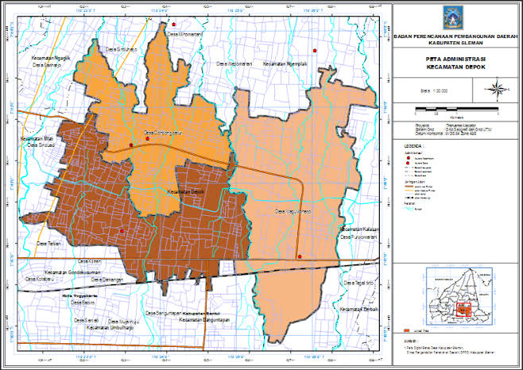

Kalurahan Caturtunggal
Area urban dengan aktivitas pendidikan, perdagangan, dan layanan publik yang tinggi.
WebGIS interaktif untuk mengeksplorasi persebaran fasilitas publik dan mendukung analisis aksesibilitas pada tiga kalurahan di Kapanewon Depok, Kabupaten Sleman.

WebGIS ini menyajikan persebaran fasilitas publik dan jaringan jalan di Kapanewon Depok untuk membantu mengidentifikasi konsentrasi layanan, wilayah dengan akses yang masih terbatas, serta keterhubungan antar fasilitas. Informasi spasial tersebut dapat digunakan sebagai dasar awal dalam evaluasi aksesibilitas dan perencanaan pelayanan publik yang lebih efektif.
Area urban dengan aktivitas pendidikan, perdagangan, dan layanan publik yang tinggi.
Wilayah permukiman dan komersial padat dengan akses ke berbagai fasilitas perkotaan.
Wilayah berkembang dengan jaringan jalan utama dan variasi fasilitas publik.
WebGIS ini mengintegrasikan berbagai data fasilitas publik dan jaringan jalan untuk memberikan gambaran persebaran layanan serta mendukung analisis aksesibilitas di Kapanewon Depok.
Rumah sakit, puskesmas, klinik, dan fasilitas kesehatan.
SD, SMP, SMA/SMK, perguruan tinggi, dan fasilitas pendidikan.
Kantor kapanewon, kantor kalurahan, dan pelayanan pemerintahan.
Pasar dan fasilitas ekonomi lokal yang relevan.
Filter fasilitas berdasarkan kategori, kalurahan, dan kata kunci.
Leaflet map dengan popup informatif, klik poligon kalurahan, serta layer administrasi dan jaringan jalan.
Ringkasan jumlah seluruh data, data yang sedang tampil, serta distribusi per kategori fasilitas.
Analisis berbasis origin untuk membuat buffer jangkauan, menemukan fasilitas terdekat, dan menampilkan shortest path melalui jaringan jalan.